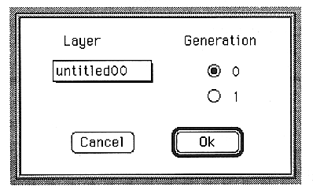

Slot window.

This window sets the source to be used as modulation input X.
Sets the modulation X of the selected layer to the selected Generation.
The parameters set in this window are as follows:
LAYER popup menu
Displays the layer name.
Generation
・0
Latest data
・1
Data from the previous generation